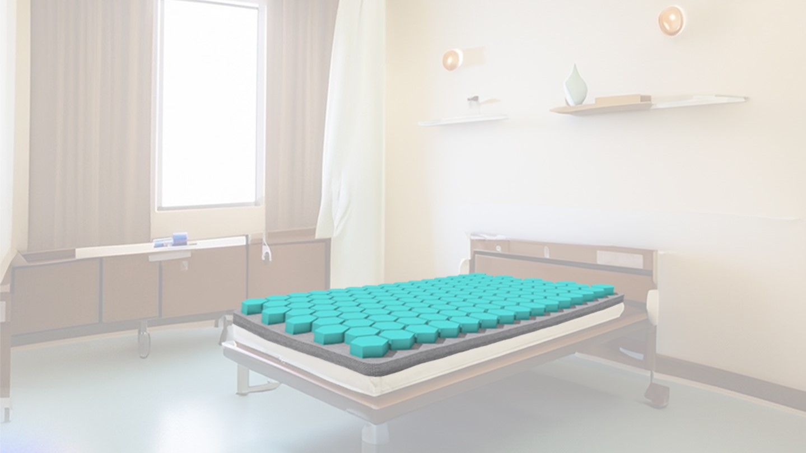
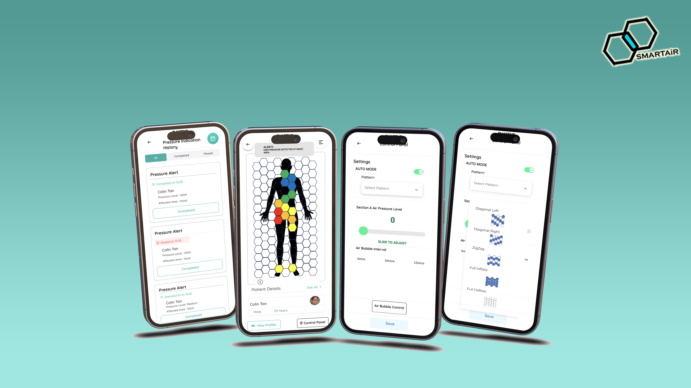
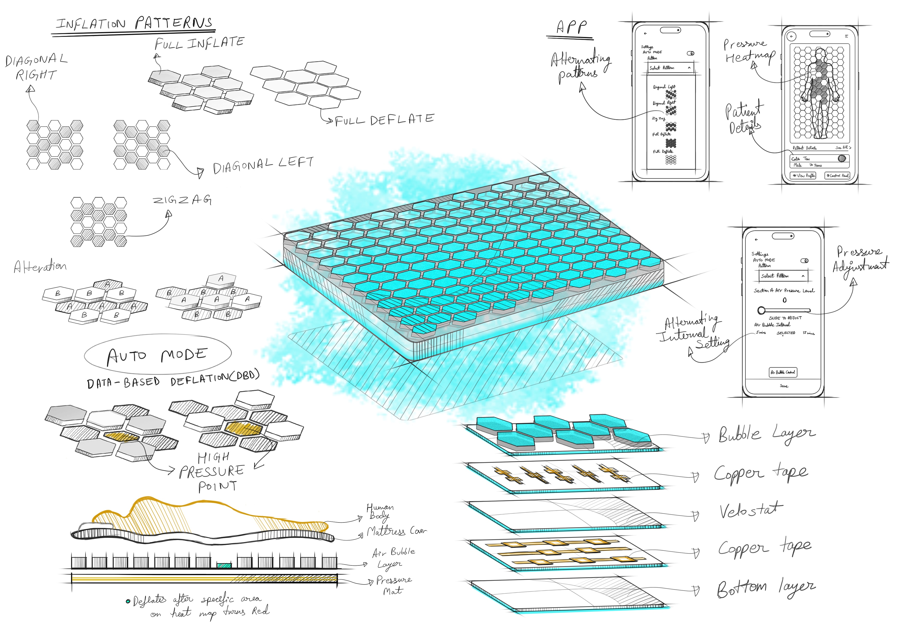
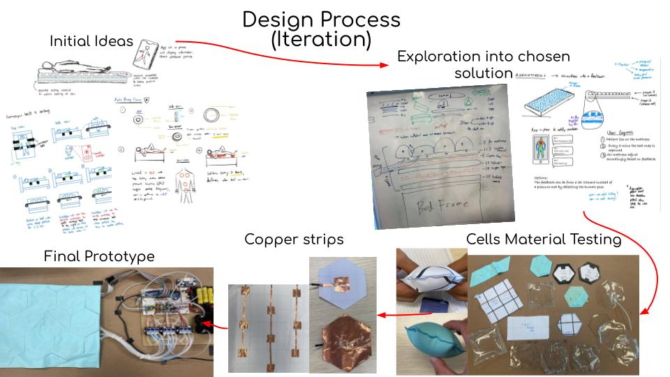
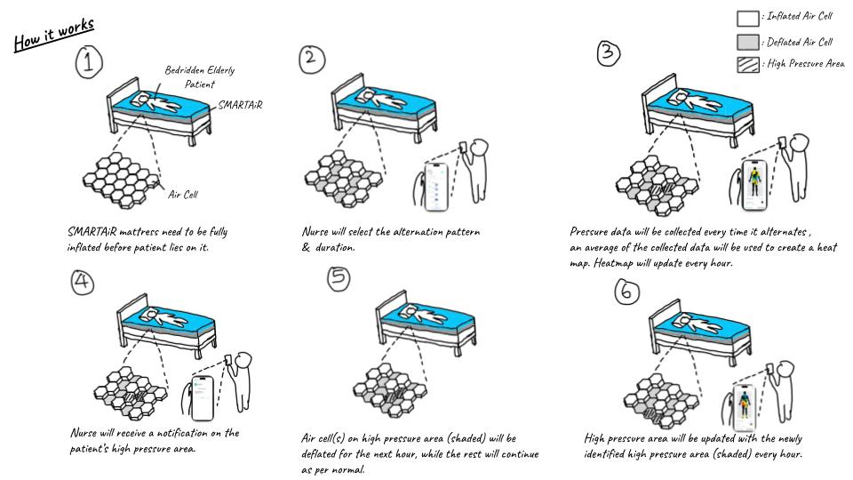

Problem
• Pressure ulcers are one of the most common complications occuring in hospitals around the world.
• Pressure ulcers are the third most costly disease to treat only after cancer and cardiovascular diseases.
Problem statement
• How could current methods of preventing pressure sores for bedridden elderly patients be improved?
SMARTAiR (hospital setting)
SMARTAiR video
Application
Functionality sketch
Prototype iteration
Storyboarding
What it does
SMARTAiR is an advanced alternating air mattress for bed sores prevention capable of individually controlling cells and providing prompt data feedback, alerts and visualisation to detect possible high pressure areas and isolate them before bed sores develop.
Our inspiration
With the aging population on the rise in many countries, the prevalence of bed sores has become a significant issue among bedridden elderly individuals as they contribute to the top three hospital acquired complications globally. Existing methods for alleviating bed sores in bedridden patients are heavily reliant on caretakers’ active involvement in providing necessary treatment which requires plenty of time and effort by the caretaker. For example, manually repositioning the patient every two hours to help relieve pressure on the body. Identifying these gaps provided us with an opportunity to develop a solution.
How it works
SMARTAiR integrates the functionalities of both an alternating air mattress and a pressure mat which is controlled by an app. The uppermost layer of the air mattress consists of hexagonal air cells, and the airflow within each cell is controlled by a solenoid. This allows individual control of each cell and different alternating patterns. Beneath the air cell layer, multiple layers of copper tape are separated by a velostat, a material that increases electric current levels under high pressure. In our application, as the pressure in the cell increases, the underlying copper tape conducts higher current values. By utilizing the difference in current, we can assess pressure fluctuations and create a heat map by averaging periodic data shown in the app for easy visualisation. When an area with prolonged high pressure is detected, cells in that area will not inflate, thus providing isolation from pressure and a window for rehabilitation.
Design process
We began with defining requirements for a bed sore prevention design. Collaborating with stakeholders such as nurses, we gathered relevant data through interviews and surveys. From the interviews, we adapted the initial idea to incorporate factors based on the feedback given. Key features such as material and sustainability were identified thus, shaping our project. This thorough requirement analysis formed the foundation of our design thinking process. Our team developed individual conceptual designs using brainstorming sessions, sketching and CAD software to help us visualise concepts. Based on a set of defined criteria, we chose the concept of a smart air mattress that would be the most promising. To create the prototype, we divided the design into two parts, pressure-sensing and air mattress. Selection of the materials’ comfort and durability were some of the challenges faced. To ensure the prototype meets the requirements, functional tests were conducted. Managing potential risks early in the design process was crucial for us. Risk assessments were conducted to identify potential risks that can be detrimental to the success of the project. Some of the issues which were raised included strict regulations for medical products, material durability and user safety concerns.
How is it different
The current market offers air mattresses that delay the occurrences of pressure sores and rely on manual patient monitoring. Pressure mats are also available but at an exorbitant cost that might be unaffordable to many. Our proposed solution, SMARTAiR, goes a step further. In addition to the normal function of an air mattress, SMARTAiR aims to prevent the development of pressure sores while also providing continuous monitoring of bedridden elderly patients. SMARTAiR contains configurations for different inflation patterns to relieve pressure on the whole body, while an algorithm, DBD (Data-Based Deflation) will run simultaneously to deflate specific cells, when high-pressure points are detected during patient monitoring. Caretakers will also be promptly notified when such a high-pressure point is identified, enabling them to take immediate action if needed.
Future plans
We hope to develop a fully-scaled prototype of our product and conduct comprehensive clinical trials to get user feedback, thus further improving the product. Furthermore, we hope to look into eco-friendly materials to aid with material extraction and end-of-life disposal plans. Once the design is finalized, we hope to collaborate with manufacturing experts to ensure the feasibility of large scale production. Finally, we aspire to successfully commercialize the product and improve the quality of life for caretakers and patients alike.